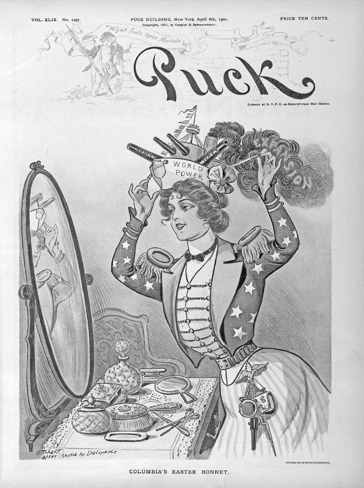

Chapter 33
PRACTICE MULTIPLE-CHOICE QUESTIONS
Practice with the following AP®-style questions. Then go online to access our timed, full-length practice exam at www.rea.com/studycenter.
Questions 1 and 2 refer to the excerpt below.
“For all the calamities that came in the long run, European contact at first offered American Indian peoples many opportunities and advantages. Old World technologies provided a range of trade goods that brought vast improvements to everyday life. . . . What was arguably the greatest contribution, however, was not made of metal but of flesh and blood—the horse. Its effects, especially on western tribes, were truly revolutionary. It altered their material lives, rearranged their relations with their environments, and fed a burst of power and affluence.”
— Elliott West, historian, 2009
1.The developments described by West most directly illustrate which of the following major historic trends in the Atlantic world?
(A)The impact of the Columbian Exchange
(B)The spread of maize agriculture across North America
(C)The increasing conflict among European powers over access to New World trade routes
(D)The use of the encomienda system to organize and regulate Native American labor
2.Which of the following most directly contributed to “the calamities” referenced in the excerpt?
(A)Significant population growth and economic development in many parts of Europe
(B)The growing dependence of Native American upon European goods
(C)Widespread epidemics of deadly diseases among New World peoples
(D)The emergence of a racially mixed population in Spanish American colonies
Questions 3 to 5 refer to the excerpt below.
“We appeal to the country itself. . . . by what cabal . . . the designs of many of those whom we call great men have been transacted and carried on, but let us trace these men in authority and favor to whose hands the dispensation of the country’s wealth has been committed; let us observe the sudden rise of their estates [compared] with the quality in which they first entered this country. . . . Now let us . . . see what sponges have sucked up the public treasure and wither it has not been privately contrived away by unworthy favorites and juggling parasites whose tottering fortunes have been repaired and supported at the public charge. . . .
— Nathaniel Bacon, “Manifesto,” 1676
3.Which of the following types of evidence would best be used to support Bacon’s argument in the excerpt?
(A)Records documenting the increased use of enslaved Africans on Virginia tobacco plantations
(B)Debates in the House of Burgesses discussing the expansion of women’s property rights
(C)Correspondence between indentured servants and their families in England
(D)Tax records showing the changes in the average incomes of Virginia planters between 1650 and 1675
4.The events described in the excerpt contributed most directly to
(A)intensified efforts to discover gold and other precious metals
(B)the decision to replace indentured servants with enslaved Africans
(C)a shift from tobacco production to an economy based on shipbuilding and trade
(D)the expansion of the suffrage to all white males
5.Bacon most likely wrote his account in order to
(A)justify and explain his actions
(B)promote an alliance between colonists in Virginia and colonists in New England
(C)endorse the cultivation of sugar as a new cash crop
(D)propose a treaty of reconciliation with the Native American tribes
Questions 6 to 8 refer to the excerpt below.
“DEAR SIR: I am in receipt of your letter of the 22d of July . . . giving an account of the late barbarous massacre {of six freedmen] at the town of Hamburgh, S.C. . . . The scene at Hamburgh, as cruel, blood-thirsty, wanton, unprovoked, and uncalled for as it was, is only a repetition of the course which has been pursued in other Southern states within the last few years, notably in Mississippi and Louisiana. . . . There has never been a desire on the part of the North to humiliate the South. Nothing is claimed for one State that is not fully accorded to all others, unless it may be the right to kill Negroes and Republicans without fear of punishment and without loss of caste or reputation. . . . I will give every aid for which I can find law or constitutional power. A government that cannot give protection to life, property, and all guaranteed civil right (in this country, the greatest is an untrammeled ballot) to the citizen, is, in so far, a failure, and every energy of the oppressed should be exerted, always within the law and by constitutional means, to regain lost privileges and protection.”
— President Ulysses S. Grant, Reply to the governor of South Carolina,
July 26, 1876
6.Efforts by Republicans to establish a base for their party in the South after the Civil War failed because of
(A)the emergence of the sharecropping system
(B)the U.S. Supreme Court decision in Plessy v. Ferguson
(C)the allocation of scarce resources to building transcontinental railroads
(D)the South’s determined resistance and the North’s waning resolve
7.The opinions expressed by President Grant would most likely have been endorsed by
(A)Southern Redeemers
(B)Southern Democrats
(C)Radical Republicans
(D)West Coast nativists
8.Which of the following was NOT a technique used in Southern states to disenfranchise African American voters?
(A)Poll taxes
(B)Literacy tests
(C)White primaries
(D)Loyalty oaths
Questions 9 to 11 refer to the following image from 1901.
Columbia’s Easter Bonnet

Courtesy of the Library of Congress
9.The cartoonist most likely supported
(A)United States acquisition of overseas territories
(B)a treaty limiting the naval arms race
(C)government policies favoring corporations
(D)public relations campaigns encouraging women to join the armed forces
10.The image was created most directly in response to the
(A)outbreak of World War I
(B)transformation of the United States into an industrial society
(C)the election of large numbers of women to political offices
(D)United States victory in the Spanish-American War
11.The situation depicted in the image contributed most directly to
(A)the United States decision to suppress an independence movement in the Philippines
(B)public opposition to United States imperialism
(C)the belief that the federal government should play a more active role in promoting economic growth
(D)the women’s suffrage movement
Questions 12 to 15 refer to the excerpt below.
“While much is said about moneymaking, not enough is said about efficient, self-sacrificing toil of head and hand. Are not all these things worth striving for? The Niagara Movement proposes to gain these ends. . . . If we expect to gain our rights by nerveless acquiescence in wrong, then we expect to do what no other nation ever did. What must we do then? We must complain. Yes, plain, blunt complain, ceaseless agitation, unfailing exposure of dishonesty and wrong—this is the ancient, unerring way to liberty, and we must follow it.”
— W.E.B. Du Bois, “The Niagara Movement,” 1905
12.The beliefs expressed in the excerpt most directly challenged the prevailing idea in early twentieth century America that
(A)African Americans should migrate from the South to cities in the North and West
(B)separate but equal public facilities for African Americans were appropriate
(C)sharecropping was the best route to economic advancement
(D)African American voters should shift their allegiance to the Democratic Party
13.Which of the following developments in the second half of the twentieth century best represented the continuation of the ideas expressed in this excerpt?
(A)An environmental movement focused on banning chemical insecticides
(B)A religious movement focused on personal conversion and family values
(C)A women’s rights movement focused on challenging sex discrimination in the workplace
(D)A peace movement focused on ending the Vietnam War
14.The excerpt was a direct response to
(A)Ida B. Wells’ campaign against lynching
(B)Booker T. Washington’s accommodationist policies
(C)Theodore Roosevelt’s Square Deal programs
(D)Susan B. Anthony’s campaign for women’s suffrage
15.Du Bois’ ideas about “ceaseless agitation” are most consistent with which of the following?
(A)The controversy over flappers during the 1920s
(B)The migration of Oakies to California during the 1930s
(C)The wave of sit-in demonstrations during the early 1960s
(D)The Best Generation critique of American culture during the 1950s
Questions 16 and 17 refer to the excerpt below.
Little boxes on the hillside,
Little boxes made of ticky tacky
Little boxes on the hillside,
Little boxes all the same. . . .
And the people in the houses
All went to the university.
Where they were put in boxes
And they came out all the same. . . .
And they all play on the golf course
And drink their martinis dry
And they all have pretty children
And the children go to school,
And the children go to summer camp
And then to the university
Where they are put in boxes
And they come out all the same.
— Malvina Reynolds, “Little Boxes,” 1962
16.Which of the following movements expressed ideas most similar to the ideas expressed in the excerpt?
(A)“Luck and pluck” novelists in the Gilded Age
(B)Muckrakers in the early 1900s
(C)Harlem Renaissance writers in the 1920s
(D)Beat writers in the 1950s
17.The patterns described by Malvina Reynolds most directly illustrate which of the following major historic developments during the 1950s?
(A)The growing impact of immigration from Latin America and Asia
(B)The rise of McCarthyism
(C)The impact of Great Society urban renewal programs
(D)The conformity and materialism of American culture
Questions 18 and 19 refer to the excerpt below.
“The problem lay buried, unspoken for many years in the minds of American women . . . The suburban wife struggled with it alone. As she made the beds, shopped for groceries, matched slipcover material, ate peanut butter sandwiches with her children, chauffeured Cub Scouts and Brownies, lay beside her husband at night—she was afraid to ask even of herself the silent question—‘Is this all?’
— Betty Friedan, The Feminine Mystique, 1963
18.The sentiments expressed in the excerpt most directly challenge the prevailing ideal in the 1950s and early 1960s that women should
(A)focus their energies on the domestic sphere
(B)receive equal pay for equal work
(C)use fashion to challenge traditional gender roles
(D)teach their children to become informed and responsible citizens
19.Which of the following most shaped the patterns of behavior described in the excerpt?
(A)Cold War anxieties
(B)The Supreme Court decision in Brown v. Board of Education
(C)Unprecedented economic prosperity
(D)The ratification of the Equal Rights Amendment (ERA)
Questions 20 to 22 refer to the excerpt below.
I know it may not be fashionable to speak of patriotism or national destiny these days. But I feel it is appropriate to do so on this occasion. . . .
Let historians not record that when America was the most powerful nation in the world we passed on the other side of the road and allowed the last hopes for peace and freedom of millions of people to be suffocated by the forces of totalitarianism. And so tonight to you, the great silent majority of my fellow Americans, I ask for your support. . . . Let us be united for peace. Let us also be united against defeat. Because let us understand: North Vietnam cannot defeat or humiliate the United States. Only Americans can do that.
— Richard Nixon, Address to the Nation,
November 3, 1969
20.Nixon’s primary purpose in the excerpt was to
(A)rally public support for his policy of détente
(B)rally public support for his policy of Vietnamization
(C)rally public support for his policy of bombing Cambodia
(D)rally public support for his policy of executive privilege
21.Which of the following ideas most directly contributed to America’s involvement in the conflict with North Vietnam?
(A)The strategy of brinksmanship
(B)The concept of mutually assured destruction
(C)The growing fear of nationalist movements in Africa
(D)The belief in the domino theory
22.Nixon’s address was delivered in response to
(A)the emergence of the black power movement
(B)the increasing radicalization of the feminist movement
(C)a growing public debate over the rationale for the Vietnam War
(D)Cold War tensions in Berlin
Questions 23 to 25 refer to the excerpt below.
“It was in suburbs such as Garden Grove, Orange County, [California] . . . that small groups of middle-class men and women met in their new tract homes, seeking to turn the tide of liberal dominance. Recruiting the like-minded, they organized study groups, opened ‘Freedom Forum’ bookstores, filled the rolls of the John Birch Society, entered school board races, and worked within the Republican Party, all in an urgent struggle to safeguard their particular vision of freedom and the American heritage.
— Lisa McGirr, historian, Suburban Warriors:
The Origins of the New American Right, 2015
23.The “middle-class men and women” referenced in the excerpt were part of which broader historical movement?
(A)The emergence of a counterculture
(B)The rise of radical feminists
(C)The protests of the Civil Rights movement
(D)The growth of the conservative movement
24.The “tide of liberal dominance” refers to all of the following EXCEPT
(A)Great Society programs
(B)The emergence of environmental activism
(C)The increasing participation of women in the labor force during the Second World War
(D)Supreme Court decisions prohibiting officially sponsored prayer and Bible readings in the public schools
25.Which of the following ultimately became political allies of the Orange County men and women described in this excerpt?
(A)Discontented blue-collar workers in the North
(B)Environmental activists in the Pacific Northwest
(C)Black Power protestors in urban ghettos
(D)Native American activists in South Dakota
ANSWERS AND EXPLANATIONS
1.(A) The Columbian Exchange refers to the exchange of plants, animals, and diseases between the New World and Europe following the discovery of America in 1492. The excerpt discusses examples of how the Columbian Exchange affected New World peoples.
2.(C) Smallpox and other contagious European diseases decimated New World societies. Demographers estimate that the Native American population plummeted by as much as 90 percent in the first century of contact with Europeans.
3.(D) Bacon charges that the “men in authority” are “sponges” and “parasites” whose fortunes have been supported by “the public charge.” Tax records from 1650 to 1675 would provide evidence to substantiate Bacon’s charges.
4.(B) Bacon’s Rebellion exposed tensions between impoverished former indentured servants and the privileged gentry. As planters became more wary of their former indentured servants, they turned to enslaved Africans as a more reliable and cost-effective source of labor.
5.(A) As the leader of a rebellion, Bacon wrote his “Manifesto” to justify his actions and explain his opposition to colonial policies.
6.(D) The massacre at Hamburg, South Carolina, and violence in Mississippi and Louisiana provide examples of determined Southern resistance. Grant’s failure to back up his words of support with forceful actions illustrate the North’s waning resolve. The Supreme Court decision in Plessy v. Ferguson occurred in 1896, two decades after Grant’s letter.
7.(C) Radical Republicans would endorse Grant’s condemnation of the violence in South Carolina. Southern Redeemers and Southern Democrats supported the end of Radical Reconstruction. West Coast nativists were focused on the status of Chinese immigrants in California.
8.(D) Redeemer governments used poll taxes, literacy tests, and white primaries to disenfranchise African American voters. Loyalty oaths were part of the McCarthy-era Red Scare. They were never used to disenfranchise African American voters.
9.(A) Columbia is a poetic alternative name for America. The cartoonist portrays Columbia as a female figure proudly adjusting an Easter bonnet, which is actually a battleship labeled “World Power.” The battleship bonnet is spewing thick black smoke labeled “Expansion.” The cartoonist uses this image to convey his support for America’s growing world power.
10.(D) Created in 1901, the image celebrates America’s victory in the Spanish-American War and the nation’s emergence as a world power.
11.(A) The Treaty of Paris ceded the Philippines to the United States. The agreement aroused a powerful anti-imperialist movement to block ratification. The cartoonist clearly endorsed the treaty. After a heated debate, the Senate approved the Treaty of Paris. The United States was soon forced to use overwhelming military power to crush a Philippine independence movement.
12.(B) Du Bois wrote this essay less than 10 years after the Supreme Court decision in Plessy v. Ferguson legalized the doctrine of “separate but equal.” Du Bois called for “ceaseless agitation” to expose the accepted belief that segregated public facilities were appropriate.
13.(C) Both Du Bois and the women’s rights movement focused on fighting to end unjust discrimination directed against a specific group of people.
14.(B) In 1895, Booker T. Washington delivered his famous Atlanta Compromise speech, urging African Americans to accept segregation and focus on programs of economic self-help. Du Bois forcefully rejected this policy of gradualism and accommodation.
15.(C) The sit-in demonstrations provide a powerful example of the use of “ceaseless agitation” to expose injustice.
16.(D) During the 1950s, Beat Generation writers such as Jack Kerouac scorned middle-class suburban life. Gilded Age “luck and pluck” novels such as the Horatio Alger stories celebrated America as the land of opportunity.
17.(D) The endless rows of identical box homes embodied the conformity and materialism that dominated American culture during the 1950s.
18.(A) The 1950s witnessed a revival of the cult of domesticity. It glorified American women performing their “natural” roles as wives and mothers.
19.(C) America’s unprecedented economic prosperity supported a suburban lifestyle that consigned educated women such as Betty Friedan to a monotonous routine of household chores.
20.(B) After taking office, President Nixon began to implement a gradual policy known as Vietnamization whereby South Vietnamese troops replaced American combat forces. His address attempted to rally public support for this policy. Nixon did not initiate his policy of détente until his famous 1972 trips to China and Russia.
21.(D) First articulated by President Eisenhower, the domino theory predicted that if one country fell to communism, its neighbors would become susceptible to communist influence and control. Cold War hawks predicted that the fall of South Vietnam would inevitably lead to the fall of Southeast Asia.
22.(C) During the fall of 1969, huge antiwar demonstrations protested Nixon’s gradual approach to ending the Vietnam War. Nixon called upon “the great silent majority” to support his policies and allow him to stay the course and achieve “peace with honor.”
23.(D) Middle-class men and women living in Sun Belt communities such as Garden Grove formed a key part of the conservative movement that helped elect Ronald Reagan president in 1980.
24.(C) The Great Society, environmental activism, and Supreme Court decisions banning school prayer were all part of the “tide of liberal dominance” that prevailed during most of the 1960s. The patriotic participation of women in the labor force during World War II preceded the period of liberal dominance during the 1960s.
25.(A) The conservative coalition ultimately included discontented blue-collar workers known as “Reagan Democrats.” Environmental activists, Black Power protesters, and Native American activists did not support the conservative agenda pioneered by the Orange County conservatives described in this excerpt.